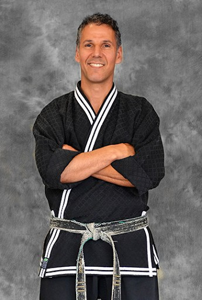

Mr. Silva
Founder and Head Instructor, 6th Degree Black Belt
Mr. Silva started training at age 12 and has spent more than three decades teaching at the studio he founded. He believes every student deserves the best instruction possible to become a black belt in life.
Favorite quote
"Trust in the Lord with all your heart, and He will make your paths straight."Proverbs 3:5–6
Off the mat
Spending time with his children Maxwell and Lucas, running, riding motorcycles, and cheering on the New England Patriots.